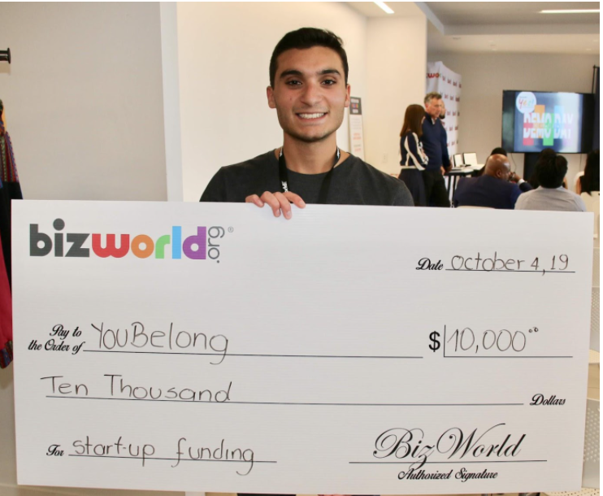
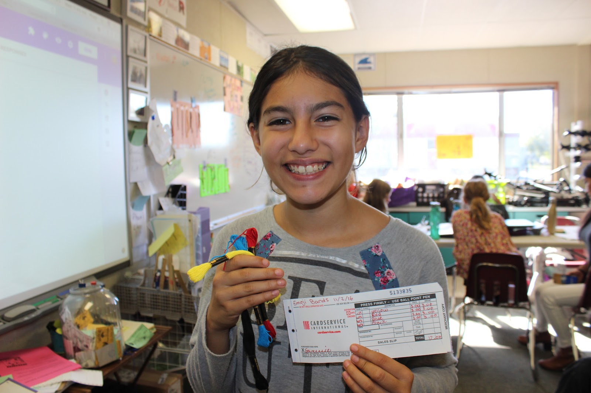
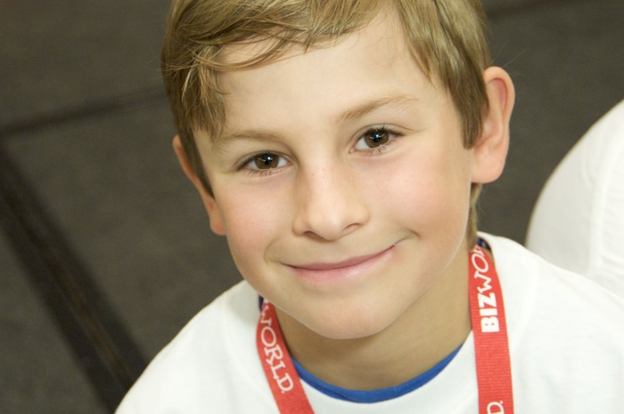

<?xml version="1.0"?>
<rss version="2.0">
	<channel>
		<title>bizworld.org - Case Studies Students</title>
		<link>https://bizworld.org/</link>
		<item>
			<title>youBelong Purple</title>
			<link>https://bizworld.org/Events-NEW/155/youBelong-Purple</link>
			<description>
				<![CDATA[<br />youBelong and Purple Provide Opportunities For People with Differing Abilities
				BizWorld’s YES! Program Integral to Purple’s Launch 
				John Ciocca, 21-yr old founder and CEO of youB…]]>
			</description>
			<pubDate>Tue, 22 Jun 2021 15:58:00 -0700</pubDate>
		</item>
		<item>
			<title>The Lightbulb went on for Emily</title>
			<link>https://bizworld.org/Events-NEW/71/The-Lightbulb-went-on-for-Emily</link>
			<description>
				<![CDATA[<br />Emily, a 6th grade student at White Cliffs Middle School in Kingman, AZ, learned the key factors of being a successful entrepreneur while participating in the BizWorld program. “An entre…]]>
			</description>
			<pubDate>Mon, 23 Feb 2015 15:11:00 -0800</pubDate>
		</item>
		<item>
			<title>Leadership through Ryann's eyes</title>
			<link>https://bizworld.org/Events-NEW/70/Leadership-through-Ryanns-eyes</link>
			<description>
				<![CDATA[<br />Ryann was the CEO of a company in Jackie Adams’ 4th grade class at Alta Loma Elementary in Phoenix, AZ. As the leader of a company, Ryann learned a lot about building a team. “As C…]]>
			</description>
			<pubDate>Mon, 23 Feb 2015 15:10:00 -0800</pubDate>
		</item>
	</channel>
</rss>